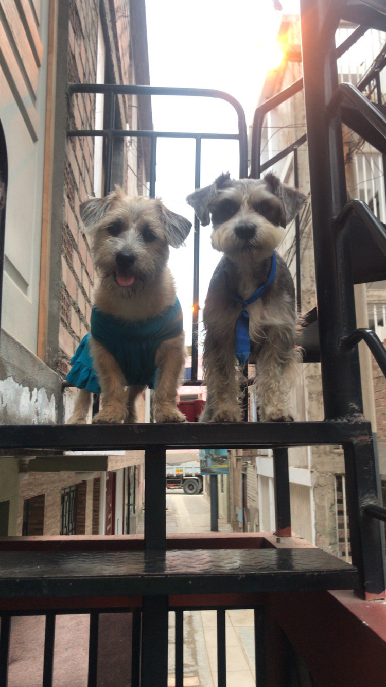

Hay historias que empiezan con una fecha.
La nuestra empezó sin avisar.
Seis años, dos países en el corazón, dos ciudades, dos hijos perrunos, miles de recuerdos… y una pregunta que todavía quiero hacerte.
Una familia improbable.
Y perfectamente nuestra.
Annys desde Venezuela. Diego desde Trujillo. George, nuestro pequeño schnauzer. Y Mía, la chalaca que llegó después para completar la manada.

La manada 🐾Si estas fotos hablaran…
dirían que nos reímos, crecimos, nos equivocamos, volvimos a empezar y aprendimos a convertir cualquier lugar en casa.
Te volvería a escoger.
No porque nuestra historia haya sido perfecta, sino porque es nuestra. Conozco tus luces, tus días difíciles, tu forma tan bonita de amar a cada animal, tus ocurrencias, tu carácter, tus sueños y esa forma tuya de convertir una simple salida en un recuerdo.
Quiero más cenas, paseos con George y Mía, entrenamientos, viajes, intentos de patinar sin matarnos 😂, domingos tranquilos, planes locos y sí… muchas más arepas, aunque alguna vuelva a terminar un poquito quemada.
Hemos vivido distancias y reencuentros. Y cada vez que volvemos a encontrarnos entiendo lo mismo: contigo quiero seguir aprendiendo todas las versiones de la vida.

Después de 6 años,
¿quieres ser mi enamorada?
Quiero seguir siendo tu compañero, tu cómplice, tu familia y ese loco con quien todavía nos quedan demasiadas aventuras por vivir.